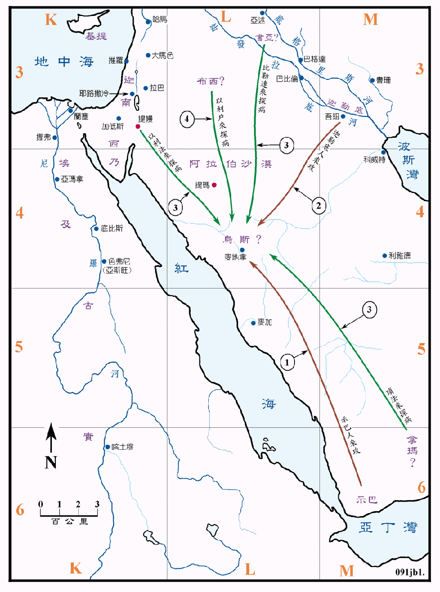

行动线说明
| 序号 | 圣经 | 说明 |
|---|---|---|
| 1 | 伯1:15 | 示巴人闯来，掳去牲畜、杀了仆人。 |
| 2 | 伯1:17 | 迦勒底人闯来，掳去骆驼，杀了仆人。 |
| 伯1:18 | 狂风吹塌房屋，约伯的子女都被压死了。 | |
| 3 | 伯2:11 | 约伯的三个朋友，从提幔、书亚和拿玛来安慰他。 |
| 4 | 伯32:2 | 布西人以利户向约伯发怒。 |
这段历史发生的年代无从查证，有学者认为是在亚伯拉罕时代的前后。作者是谁并不清楚，而且乌斯地的位置也不详。传统上认为是在约但河的东岸，现代大多数的圣经学者同意乌斯地是在现今阿拉伯的北部，靠近麦地那城 (回教教主穆罕默德的坟墓所在地) 的阿菲拉克绿洲。书中所提到的地名，除提幔、迦勒底、示巴等地的位置尚可确定之外，其他的只能推测大略的位置。书亚可能是在巴比伦之北，拿玛可能在阿拉伯之南部，布西可能是在亚拉伯的北部。从此卷书中，可以看出约伯的活动范围是相当的广阔。
这张图同时绘出古实地区和尼罗河上流的状况，可供参考。